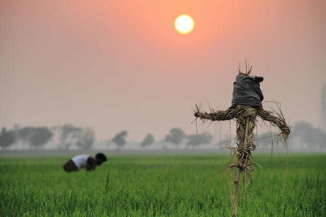

Study Bangladesh
Its full name is The People's Republic of Bangladesh. The capital and the largest city is Dhaka (formerly "Dacca"). Bangladesh is surrounded on three sides by the Republic of India (Bharat), and Myanmar (Burma) on the south-eastern corner.

A Bangladeshi man work in field
Nestled in the heart of South Asia, Bangladesh is a country that boasts a rich tapestry of culture, history, and resilience. With a population of over 160 million people, it is one of the most densely populated countries in the world. Despite its relatively small size, Bangladesh has made significant strides in various fields, capturing the world's attention for its vibrant traditions, economic growth, and the tenacity of its people.
Geography and Landscape:
Bangladesh is characterized by its diverse geography, featuring lush green landscapes, sprawling rivers, and the world's largest river delta. The Ganges, Brahmaputra, and Meghna rivers converge in the Bay of Bengal, forming the Sundarbans, the largest mangrove forest in the world and a UNESCO World Heritage Site. The country's low-lying topography, however, makes it susceptible to annual monsoons and cyclones, posing challenges that the resilient Bangladeshis face with determination.
Culture and Heritage:
Bangladesh's culture is a vibrant mosaic of traditions that have evolved over centuries. The country has a rich history influenced by various civilizations, including the Mughals and British, leaving behind a legacy evident in its architecture, art, and cuisine. The people of Bangladesh are known for their warm hospitality, and cultural festivals like Pohela Boishakh (Bengali New Year) and Durga Puja are celebrated with immense enthusiasm and joy.
Language and Literature:
Bengali, the official language of Bangladesh, holds a significant place in the nation's identity. The works of literary giants like Rabindranath Tagore, the first non-European Nobel laureate in Literature, and Kazi Nazrul Islam, the national poet, have left an indelible mark on Bengali literature. The country's commitment to preserving its linguistic heritage was evident in the Language Movement of 1952, a pivotal event that ultimately led to the recognition of Bengali as one of the official languages of Pakistan.
District of Bangladesh